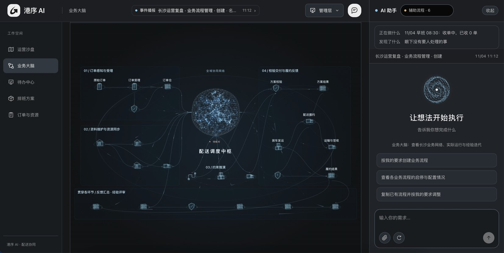

港序 GANGXU
业务中枢，让配送协作有序推进
AI 辅助城市配送，从业务输入到现场履约
产品原型与录制演示；案例数据不代表生产收益
01
订单有依据
方案能执行
异常有人接

中枢协作 智能大脑 3D 方案 人机切换
港序 GANGXU
五种互补能力，共同交付港序
产品、架构、算法协同与现场体验
团队信息沿用原稿，个人经历由成员最终核对
02
01
谢昶
系统架构
性能工程
02
龚佑成
后端研发
多智能体
03
李国尧
全栈工程
稳定性
04
许帅
产品体验
AIGC
05
陈浩楠
AI 产品
客户端
成员拥有字节跳动、阿里、京东、网易等企业研发与设计经历
港序 GANGXU
业务难点，决定了港序的架构
10 辆车人工排车约需 1～2 小时，且依赖调度经验
业务现状：共性问题回应 A02–A03；架构：工程现行实现与设计边界
03
| 业务痛点 | 架构应对 | 对应业务结果 |
|---|
| 跨系统、跨岗位反复沟通 | 业务中枢＋统一任务事实 | 同一任务，各岗位按职责交接 |
| 排车靠经验，成本时效相互牵动 | 智能大脑＋专业计算工具 | 比较方案，解释取舍与依据 |
| 路线排好，现场仍可能装不下 | 路线与 3D 装载联合计算 | 装载与卸货可行性提前检查 |
| 异常难协调，经验难复用 | 人工接管＋执行留痕＋复盘 | 有人处理，经验验证后再采用 |
AI 理解与协同，程序计算与校验，人负责关键决定
港序 GANGXU
业务中枢，组织多角色完成同一任务
上传业务表格后，先核对事实，再组织规划与执行
表格入口与角色流程需按实际演示环境衔接；不宣称任意表格无人值守分派
04
业务输入
订单与车辆
货品规格与门店要求
字段、单位与缺项确认
中枢组织
绑定已确认业务数据
调用规划与校验工具
记录任务状态与交接依据
岗位执行
调度：确认方案
仓库：核对实装
司机：执行与回执
客户：收货反馈
执行结果回到中枢，异常进入责任人的待办
港序 GANGXU
智能大脑，把方案取舍讲清楚
同一批 26 单、6 辆可用车，按业务目标比较候选
原稿第8页录制案例；只代表所示输入与计算结果
05
成本优先
810 元
3 辆车 13:46 完成
尽早完成
1,230 元
6 辆车 11:40 完成
多花 420 元，提前 2 小时 6 分钟完成
业务要求由人确认；费用与时间由程序计算；候选通过校验后再批准
港序 GANGXU
3D 方案，提前检查装得下、卸得出
路线、箱位与卸货顺序一起考虑
原稿与录屏对应车次 V1；数据不默认与策略页同一快照
06
180 箱
12 站
逐箱定位
后卸先装
承压与装卸检查
实装核对 180 / 180
港序 GANGXU
人机切换，关键决定始终有人负责
AI 推进工作，人可暂停、接管并明确交回
工程 brain_service.py 接管机制；原稿运力案例为录制与模拟场景
07
正常推进
AI 整理事实、调用工具、展示候选与依据
遇到阻塞
说明缺什么、哪里不满足、哪些任务受影响
人工接管
暂停自主变更，补充信息或选择处理方案
明确交回
重新核对依据与版本，再继续推进
港序 GANGXU
经验经过验证，再用于下一次配送
AI 员工留下处理依据，组织保留可审核的经验
经验实验为隔离模拟；工程 brain_evolution.py 支持采用与回退
08
记录
保留操作、结果与来源
复盘
对照原文提出经验修改
验证
同组输入比较新旧版本
采用
人工确认，历史版本可回退
港序 GANGXU
现场演示：一份任务如何完成决策
同一业务任务，串起中枢协作、方案计算、3D 检查与接管
现场使用预置合成任务；失败时使用附录全流程录屏
09
00:00–00:30 看业务输入
展示表格字段核对、任务与岗位职责
00:30–01:30 比候选方案
查看成本、时效、约束与独立校验
01:30–02:30 查 3D 装载
查看一辆车的箱位与逐站卸货
02:30–04:00 接管与反馈
展示暂停、接管、交回入口及处理记录
港序 GANGXU
联合规划，已有可复核的合成对照
15 组历史合成场景，与先排线再修补装箱的方法配对比较
来源：web/scale-evidence.json，2026-10-11；估算距离矩阵；非生产收益、非本次复测
10
13 组
成本更低
2 组
成本持平
15 / 15
通过既定校验
| 场景规模 | 每组数量 | 平均成本降幅 |
|---|
| 10 店 | 5 个场景 | 0.9% |
| 30 店 | 5 个场景 | 1.3% |
| 60 店 | 5 个场景 | 3.5% |
港序 GANGXU
落地从一批可核对的订单开始
接入真实业务时，先验证约束，再验证收益
企业试点建议；不代表已完成 TMS 接入或生产验收
11
01 对齐输入与规则
订单、箱规、车辆、门店时间窗；缺项补齐，不支持的要求明确交人
02 历史回测与影子运行
同一批订单比较人工计划与系统候选，保留现有作业流程
03 有限线路执行
调度批准，仓库实装核对，司机记录签收与异常
04 按实际结果验收
排车耗时、结算成本、签收准时率、重排与倒货次数
港序 GANGXU
四个亮点，服务一次完整履约
让业务输入、方案决策和现场执行连得起来
港序 GANGXU
12
中枢协作
同一任务，按岗位交接
智能大脑
给出方案，也给出依据
3D 方案
装车前检查执行可行性
人机切换
关键时刻有人接手
谢谢各位评委
港序 GANGXU
答辩备份：数据与能力边界
主讲结束后按问题展开
来源：原稿、共性问题回应、当前工程入口与历史评测
13
| 主题 | 可说明的证据 | 不能扩大解释为 |
|---|
| 策略比较 | 26单；810元/1230元 | 生产降本率或全局最优 |
| 3D实装 | V1车次180/180箱 | 所有车次准确率100% |
| 经验实验 | 模拟预计530元/1505元 | 真实结算收益或线上A/B效果 |
| 人机协同 | 暂停、接管、明确交回 | 全部异常自主处理 |
| 中枢接入 | 明确文件合同与确认流程 | 任意企业表格自动全链路分派 |
港序 GANGXU
视频备份：业务大脑与数字员工
15 秒片段，辅助说明中枢任务协作
用户提供录屏；点击画面播放
14
港序 GANGXU
演示备份：全流程录屏
02:22，现场演示无法继续时使用
用户提供录屏；点击画面播放；此视频替代现场演示，不额外增加时长
15
港序 GANGXU
视频备份：途中异常联动
35 秒模拟片段，用于回答异常影响范围
模拟封路演示；不代表真实在途自动改派已全面上线
16